NOXIUM ELYSIUM > root:psiv/bios.html
Chaz Ashley • Alys Brangwin • Hahn Mahlay • Rune Walsh • Gryz • Rika • Demi • Wren • Raja • Kyra Tierney • Seth
Zio • Dark Force • Lashiec • The Profound Darkness • Hunter's Guild Clerk
All Japanese translations come from the Phantasy Star Compendium translated by Capowski's RPG-Related Translation Junk Drawer.
| 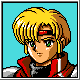 | CHAZ ASHLEY > Rudy AshleighAMERICAN INSTRUCTION BOOKLETChaz was a child of the streets, headed for a rough future until the Hunter Alys Brangwin took him under her wing. Chaz is a first rate swordsman with a quick temper and a keen eye. PHANTASY STAR COMPENDIUMA 16-year-old boy who has just been formally inducted as a Hunter. He had been a warehouse robber, but, three years ago, he was caught by Lyla (Alys); she then took him in and taught him all the skills, behavior, and manners he needed to become a Hunter. The hero of this episode. |
| JOB | Hunter |
| AGE | 16 |
| TECHNIQUES | Res, Tsu, Hinas, Ryuka, Anti, Zan, Rimpa, Gires, Githu, Brose, Gizan, Rever, Nathu, Nares, Nazan, Megid |
| SKILLS | Earth, Crosscut, Airslash, Rayblade, Explode |
| COMBOS | Paladin Blow, Firestorm, Blizzard, Grand Cross, Silent Wave, Trinity Blaster, Destruction |
| 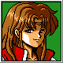 | ALYS BRANGWIN > Lyla BrangwenAMERICAN INSTRUCTION BOOKLETAlys's prowess as a Hunter has made her famous throughout Motavia. Not much is known about her past, but bits of it seem to keep poping up at odd moments... much to her embarrassment. She is most proficient with thrown weapons such as bommerangs and slicers. PHANTASY STAR COMPENDIUMRudy's (Chaz's) teacher, a master Hunter called "Tear 'Em to Pieces Lyla." Three years ago she met Rudy, took him in, and brought out his true character. During the battle with Zio, she is hit with the Black Wave while protecting Rudy and loses her life. |
| JOB | Hunter |
| AGE | Unknown |
| TECHNIQUES | Foi, Saner, Shift, Zan, Gifoi, Gizan, Nafoi, Nazan |
| SKILLS | Vortex, Moonshade, Death |
| COMBOS | Firestorm, Blizzard, Trinity Blaster, Lethal Image |
| 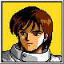 | HAHN MAHLAYAMERICAN INSTRUCTION BOOKLETHahn hails from the village of Krup and is the son of an armorer. Bored with the monotonous work of forging weapons and determined to make his mark in the world, he greatly upset his father by going off to study at Motavia Academy. While physical fighting is not one of his specialties, Hahn has a wide range of Techniques to rely on in battle. PHANTASY STAR COMPENDIUMA young scholar at Motabia Academy (Motavia Academy). Two years ago, he graduated from the biology department of Motabia Academy and became Professor Holt's assistant. He joins Lyla (Alys) and asks her to find Holt, who went to Birth Valley and has not returned. He has a fiancée in his birthplace of Krup. |
| JOB | Scholar |
| AGE | 24 |
| TECHNIQUES | Gelun, Res, Wat, Anti, Doran, Zan, Vol, Gires, Rimpa, Rimit, Giwat, Gizan, Nares, Nawat, Savol, Nazan |
| SKILLS | Vision, Astral, Eliminate |
| COMBOS | Paladin Blow, Firestorm, Blizzard, Conduct Thunder, Trinity Blaster, Holocaust |
| 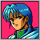 | RUNE WALSH > Thray WalshAMERICAN INSTRUCTION BOOKLETRune is an old friend of Alys, though how they first met remains a mystery. How Alys managed to put up with him is a bigger mystery still. He's powerful and arrogant, and wields a type of power rarely seen on Motavia anymore: true magic. PHANTASY STAR COMPENDIUMA master magician who, of course, can use techniques, but who also wields magic thought to have died out long ago. He's an obnoxious man who constantly treats Rudy (Chaz) like a child, but, in truth, he is the inheritor of the will and memory of Lutz, the one who fought with Alisa 2,000 years ago. |
| JOB | Wizard |
| AGE | Unknown |
| TECHNIQUES | Arows, Foi, Gra, Hinas, Ryuka, Wat, Giwat, Gifoi, Seals, Rever, Gigra, Nafoi, Nawat, Nagra |
| SKILLS | Flaeli, Hewn, Diem, Tandle, Efess, Negatis, Legeon |
| COMBOS | Firestorm, Blizzard, Conduct Thunder, Grand Cross, Shooting Star, Trinity Blaster, Holocaust, Black Hole, Circuit Break, Purify Light, Destruction |
| 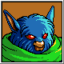 | GRYZ > PykeAMERICAN INSTRUCTION BOOKLETGryz lives to avenge his parents, who were killed when the dark wizard Zio destroyed the village of Molcum. The only other surviving member of his family is his little sister, who remains in the village of Tonoe. Gryz relies on brute strength and his skill with the axe. PHANTASY STAR COMPENDIUMA young Motabian (Motavian) warrior who is called the "Motabian Mania." He comes with Rudy (Chaz) and company to avenge his parents, who were murdered by Zio. He is quite hot-tempered man with a strong sense of duty. He has taken refuge in the Motabian town of Tonoe and looks after his little sister. |
| JOB | Motavian Soldier |
| AGE | 19 |
| TECHNIQUES | Brose |
| SKILLS | Crash, War Cry, Sweeping |
| COMBOS | None Available |
| 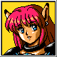 | RIKA > FalAMERICAN INSTRUCTION BOOKLETRika is a biological construct created by one of the last functioning computers on Motavia. Though she may be a little naive (a liftime spent inside an undergound computer complex doesn't offer much by way of life experience), she's a good warrior to have on your side in a scrap. Her favorite weapon is the Claw. PHANTASY STAR COMPENDIUMA girl created as the prototype of a new species of human, based on information handed down before the Great Collapse about the Nei series. She is but on year old, but, since she was raised by Seed, she's highly intelligent, and, what's more, her attack power is something of which to stand up and take notice. |
| JOB | Numan |
| AGE | 1 |
| TECHNIQUES | Res, Saner, Gires, Deban, Shift, Sar, Gisar, Nares, Nasar |
| SKILLS | Illusion, Doubleslash, Elimiate, Disrupt |
| COMBOS | Lethal Image, Destruction |
| 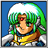 | DEMI > FreynaAMERICAN INSTRUCTION BOOKLETLike Wren, this small, powerful android will provide direction for your quest. PHANTASY STAR COMPENDIUMA female android created by Forren (Wren). She supervises the energy plate system "Nurvus." Zio seizes control of the system and imprisons her, but she is rescued by Rudy (Chaz) and friends. |
| JOB | Android |
| AGE | 324 |
| TECHNIQUES | None Available |
| SKILLS | Barrier, Medic Power, Recover, Spark, Stasis Beam, Phonomezer |
| COMBOS | Silent Wave |
| 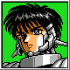 | WREN > ForrenAMERICAN INSTRUCTION BOOKLETWren offers a cool, objective counterpoint to some of the hotter tempers blazing within the group. He'll provide information and insight into your quest. PHANTASY STAR COMPENDIUMA highly efficient android created from the technology of the former civilization. He is master of the artificial satellite Zelan and overseet of the Algol Star System's (Algo Star System's) life support systems. To stop the abnormalities running amok in the system, he joins Rudy's (Chaz's) party. |
| JOB | Android |
| AGE | 998 |
| TECHNIQUES | None Available |
| SKILLS | Barrier, Flare, Recover, Spark, Hyper Jammer, Burst Rocket, Positron Bolt |
| COMBOS | Shooting Star, Circuit Breaker, Destruction |
| 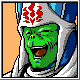 | RAJA > Su RajaAMERICAN INSTRUCTION BOOKLETRaja is a sarcastic old priest who protected the Temple of Ryuon until someone had the nerve to land a large spaceship on it. His healing skills will be handy to have around when the fighting gets intense. PHANTASY STAR COMPENDIUMA Dezolian priest who cracks too many cheap jokes. He is highly capable as a disciple, but his personality is his downfall, and he is shuffled off to a temple in a remote part of the land. But this doesn't really bother him. He goes with Rudy (Chaz) and his party, saying only that this "sounds interesting." |
| JOB | Priest |
| AGE | 85 |
| TECHNIQUES | Anti, Arows, Res, Gires, Rever, Rimit, Rimpa, Sar, Seals, Nares, Gisar, Regen, Nasar |
| SKILLS | Ataraxia, Blessing, Holyword, Miracle, St. Fire |
| COMBOS | Purify Light |
| 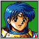 | KYRA TIERNEY > Shess TierneyAMERICAN INSTRUCTION BOOKLETKyra is a very powerful psychic who befriends your group. It's up to you to discover her capabilities.... PHANTASY STAR COMPENDIUMA girl born and raised in the Esper Mansion on Dezolis. She is studying to be an apprentice at the shrine, but she is already the best disciple, and her future is promising. Because of her impulsive nature, she is often treated as a problem child. She is an ardent follower of Lutz. |
| JOB | Esper |
| AGE | 18 |
| TECHNIQUES | Anti, Arows, Gifoi, Res, Gires, Gra, Rimpa, Gigra, Nafoi, Nares, Nagra |
| SKILLS | Flaeli, Hewn, Medice, Telele, Warla, Bindwa, Tandle |
| COMBOS | Firestorm, Blizzard, Conduct Thunder, Shooting Star, Trinity Blaster, Black Hole, Circuit Breaker |
| 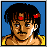 | SETH > ShiamPHANTASY STAR COMPENDIUMAn archaeologist met at the entrance of the cave leading to Soldier's Sanctuary (Solider's Temple). He looks like a good-natured middle-aged man, but he is actually Dark Force disguised in human form. Incidentally, Shiam was modeled after a certain human at the Sega offices. |
| TECHNIQUES | None Available |
| SKILLS | Corrosion, Death Spell, Mind Blast, Shadow |
| COMBOS | None Available |
 |
ZIOPHANTASY STAR COMPENDIUMA black magician who worships Dark Force. He has founded an evil cult and made Nurvus run amok to cause destruction. He wears a gauntlet on only one arm to hide the fact that his right arm has been monster-fied. He is the opponent in the first half of the tale. |
DARK FORCE > Dark FalzNO SOURCEDark Force, also known as Dark Falz, is the embodiment of malevolent energy and chaos. As an avatar of The Profound Darkness, it exists solely to bring destruction to the Algo Star System. A recurring enemy throughout the Phantasy Star series, Dark Force manifests in various forms, each more terrifying than the last, serving as a constant reminder of the cosmic threat that haunts the universe. |
| 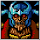 | LASHIEC > La ShiecPHANTASY STAR COMPENDIUMThe one who led the Algol Star System (Algo Star System) to ruin 2,000 years ago. He nurses a grudge against Lutz and has been resurrected as a zombie. He steals the Eclipse Torch and invites Rudy (Chaz) and company to come to his floating Air Castle. |
| 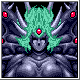 | THE PROFOUND DARKNESSNO SOURCEThe Profound Darkness is the ultimate antagonist of the Phantasy Star series, an ancient and malevolent entity that unleashes chaos upon the Algo Star System every millennium. Sealed away in another dimension, it seeks vengeance on those who imprisoned it, orchestrating calamities through its avatars, like Dark Force, to bring about the universe's downfall. |
| 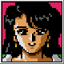 | HUNTER'S GUILD CLERKNO SOURCEThe Hunter's Guild Clerk is the helpful desk attendant who assigns side quests to Chaz and his party. Acting as the main point of contact, the clerk provides details on various jobs submitted by other characters in the game, guiding the team through their missions for rewards and challenges. "Welcome! You have come to the Hunters' Guild where we enrich the lives of hunters! The enrollment area is over there! For those of you hunters who have already joined, I'd like to give you information about available job listings. Currently listed are..." |